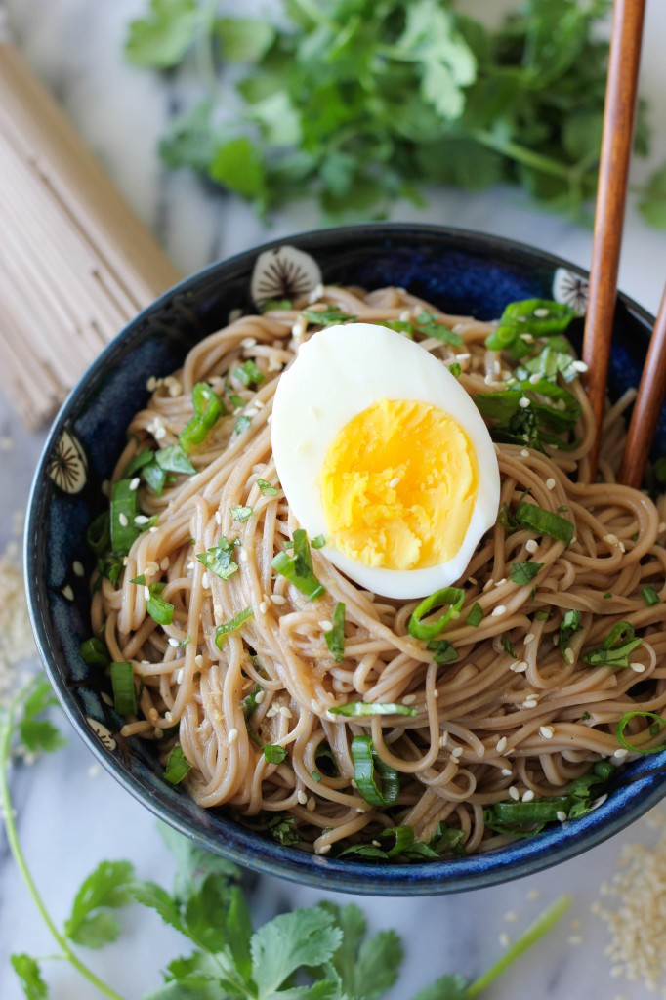

Sesame Soba Noodles

- Prep Time
- 10 mins
- Cook Time
- 5 mins
- Serves
- 2
Ingredients
- 8 ounces soba
- 1/4 cup rice wine vinegar
- 2 tablespoons soy sauce
- 1 tablespoon sesame oil
- 1 tablespoon sugar
- 1 clove garlic, pressed
- 1 teaspoon grated ginger
- 2 green onions, thinly sliced
- 2 tablespoons chopped fresh cilantro leaves
- 1 teaspoon sesame seeds
- 2 hard boiled eggs, sliced lengthwise, for serving
Instructions
-
In a large pot of boiling water, cook noodles according to package
instructions. Rinse under cold water and drain; set aside.
-
In a small bowl, whisk together rice wine vinegar, soy sauce, sesame
oil, sugar, garlic and ginger.
-
In a large bowl, combine noodles, rice wine vinegar mixture, green
onions, cilantro and sesame seeds.
- Serve immediately, garnished with eggs, if desired.
Back to main